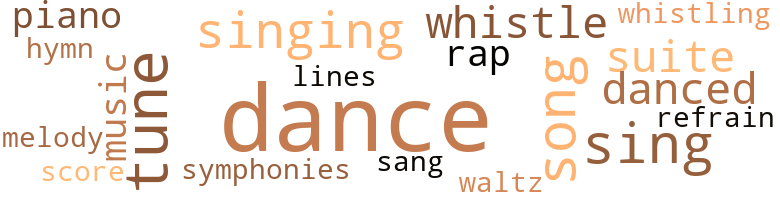
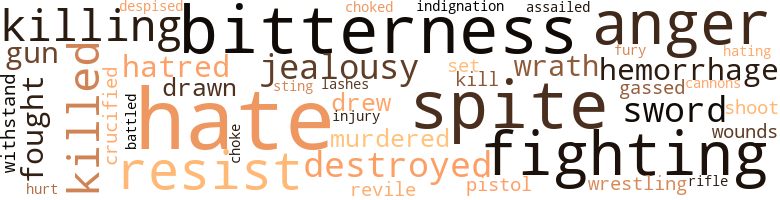
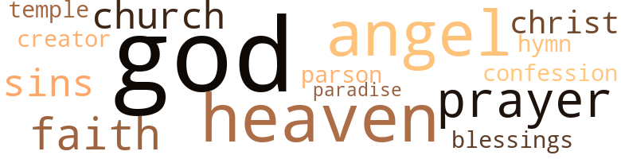

Her Golden Hour, by Sanders, Tom (1929)
64 music-related terms matched in this text.
Most frequent terms in this topic: dance (20); tune (6); sing (5); singing (4); song (4)
dance.n.01
Definition: an artistic form of nonverbal communication
| word | sentence |
|---|---|
| dance | After the dance was over he tried to apologize . |
| dance | To attend church now seemed to be a crime , but she was always the bell cow when there was an informal dance given . |
| dance | Just before the big formal dance given in honor of the graduates , when all the college boys and girls were planning for big times , the final touch of bitterness came wehn Mary offered to lend Kate a pair of black satin slippers . |
| dance | She said nothing about clothes , but begged her to go to the dance for the sake of Dan . |
| dance | Wit red rosy cheeks and a winning smile , determine to have a good time , Kate speeded to the dance i her old dress and her one and last pair of slipper She laughed and chatted and danced with that winning smile on her face , but deep down in her heart she was thinking , how could she ever be happy if she would marry Dan , who was poorer than she . |
| dance | A little later as she fin - ished a dance with one of Dan 's friends , a rather tall young man with brown eyes stepped bravely up to them . |
| dance | He asked her for the next dance in a slightly bored manner . |
| dance | The next selection was a waltz , Kate 's favorite dance , and she seemed to have danced better than ever before . |
| dance | " This is my first dance , " he said softly . |
| dance | " The next dance is mine , " he said authoritatively , looking straight at John , who was look quizzically at Kate . |
| dance | Finally she said , " I must have one more dance with him tonight , then you may take me home . " |
| dance | When they had finished the last dance , she sat beside John and chatted until the band played " Home Sweet Home . " |
| dance | When Saturday night came and everybody was preparing for the second and last big dance of the season , Kate met her Waterloo . |
| dance | After the dance they started for home and John began to tell her of his plans . |
| dance | John sat there beside her , looking at her with that same winning expression in his eyes as he had looked at Kate that wonderful evening at the dance . |
dance.v.03
Definition: skip, leap, or move up and down or sideways
| word | sentence |
|---|---|
| danced | Wit red rosy cheeks and a winning smile , determine to have a good time , Kate speeded to the dance i her old dress and her one and last pair of slipper She laughed and chatted and danced with that winning smile on her face , but deep down in her heart she was thinking , how could she ever be happy if she would marry Dan , who was poorer than she . |
| danced | After she had danced a couple of sets with him , she was more than anxious to take her seat . |
| danced | The next selection was a waltz , Kate 's favorite dance , and she seemed to have danced better than ever before . |
| dance | " Of course , not , John , I just love to dance with you . |
| dance | I could just dance and dance on forever with someone like you . " |
| dance | I could just dance and dance on forever with someone like you . " |
| dance | " You wo n't dance with him again , will you ? " |
| dance | You wo n't dance with him again , " he said angrily . |
hymn.n.01
Definition: a song of praise (to God or to a saint or to a nation)
| word | sentence |
|---|---|
| hymn | As the last moments of a wasted life was slip - ping away she thought of her aunt singing that hymn , in her thin sweet voice , as she stood be - side her in the family pew long long ago , bored and impatient with the service , hating the parson and even her aunt who carried her there , who so often shed tears every time she heard Kate 's mother 's favorite song . |
music.n.01
Definition: an artistic form of auditory communication incorporating instrumental or vocal tones in a structured and continuous manner
| word | sentence |
|---|---|
| music | When the music started , a tall dark blue eyed man appeared before her . |
| music | When the music started again he just smiled lad held out his arms . |
piano.n.01
Definition: a keyboard instrument that is played by depressing keys that cause hammers to strike tuned strings and produce sounds
| word | sentence |
|---|---|
| piano | That night Kate insisted on Mary playing the piano , as she was an artist . |
| piano | Mary left the piano and went over to the davenport , where she sat down , her tiny feet curled under her . |
rap.n.05
Definition: genre of African-American music of the 1980s and 1990s in which rhyming lyrics are chanted to a musical accompaniment; several forms of rap have emerged
| word | sentence |
|---|---|
| rap | The hour hand of the clock had passed eight and nine , but on the stroke of ten there came a rap on the door . |
| raps | It was in the midst of this , when she heard three raps on the door , the clock was striking ten . |
refrain.n.01
Definition: the part of a song where a soloist is joined by a group of singers
| word | sentence |
|---|---|
| refrain | For some cause , she could not tell whether it was the words or the melody that lingered in his heart , bat anyway it happened to be his daily refrain . |
score.n.02
Definition: a written form of a musical composition; parts for different instruments appear on separate staves on large pages
| word | sentence |
|---|---|
| score | Such outbursts ex - hausted themselves and by and by came the paralysis of pain and then fierce arguments , anger of immeasurable score , presently infinite yearning , passionate pitiful . |
sing.v.02
Definition: produce tones with the voice
| word | sentence |
|---|---|
| sing | singing bird refused to sing its song at sunrise . |
| sing | Play it over again and I will try to help you sing it . " |
| sing | John had a lovely voice and could sing bass in a soft , low tone . |
| sang | They both sang , looking at one another more seriously than ever before . |
| sing | By the time that number had been completed , Kate formed the idea that they might sing better in her absence . |
| sing | " Too bad you do n't sing and play , darling . " |
singing.n.01
Definition: the act of singing vocal music
| word | sentence |
|---|---|
| singing | As the last moments of a wasted life was slip - ping away she thought of her aunt singing that hymn , in her thin sweet voice , as she stood be - side her in the family pew long long ago , bored and impatient with the service , hating the parson and even her aunt who carried her there , who so often shed tears every time she heard Kate 's mother 's favorite song . |
| singing | The birds stopped singing . |
| singing | singing bird refused to sing its song at sunrise . |
| singing | While they were singing , Kate had lost sight of John and Mary , but she was thinking about Dan . |
song.n.01
Definition: a short musical composition with words
| word | sentence |
|---|---|
| song | As the last moments of a wasted life was slip - ping away she thought of her aunt singing that hymn , in her thin sweet voice , as she stood be - side her in the family pew long long ago , bored and impatient with the service , hating the parson and even her aunt who carried her there , who so often shed tears every time she heard Kate 's mother 's favorite song . |
| song | singing bird refused to sing its song at sunrise . |
| song | I caught a pretty little song bird in my dream last night . |
| song | You will not mind it at first , perhaps , but the time will come when , by a song or a face or a voice or a form , you will awake as from a dream to find that you have chosen carelessly . |
| songs | At the conclusion , Kate heard John say , " Wonder - ful - one of my favorite songs . |
suite.n.01
Definition: a musical composition of several movements only loosely connected
| word | sentence |
|---|---|
| suites | Stopping at the Beach Hotel she rented one of the finest suites on the south side close by the beach . |
| suite | At the hotel she ordered for herself the best suite of apartments that were vacant and the first question she asked the clerk was , " Are you acquainted with Dr. Daniel Jones ? " |
| suite | She was led to her suite of rooms . |
symphony.n.01
Definition: a long and complex sonata for symphony orchestra
| word | sentence |
|---|---|
| symphonies | The deaf who has never heard the symphonies of nature . |
tune.n.01
Definition: a succession of notes forming a distinctive sequence
| word | sentence |
|---|---|
| lines | He was reading for himself , and in hit own way the brief account of those past few days when her spirit had yielded before another over - whelming power that seems impossible to resist But disfiguring lines of suffering which were cov - ering her pale face seemed to him that the hand of Providence had fallen hard , and , in his human understanding , with more than questionable justice . |
| tune | Just before it had ceased the heavens seemed to lave opened and the fearful drops of rain played its tune upon the roof . |
| tune | Over and over again the plaintive tune was borne to her through the dark stormy night . |
| tune | The sun had risen and nothing could be heard but the soft , low tune of the wedding march . |
| tune | She smiled and hummed a little tune , pulled off her clothes and went to bed . |
| tune | The little brook which separated the park from the main highway played a soft , low tune as the ebbing tide rolled calmly down the stream . |
| tune | Kate remembered hearing John day after day hamming that same tune around the house . |
| melody | For some cause , she could not tell whether it was the words or the melody that lingered in his heart , bat anyway it happened to be his daily refrain . |
waltz.v.01
Definition: dance a waltz
| word | sentence |
|---|---|
| waltz | Kate loved to waltz ; she was once known to waltz better than any one in school during her school days . |
whistle.v.01
Definition: make whistling sounds
| word | sentence |
|---|---|
| whistle | The twelve o'clock whistle sounded . |
| whistle | As the clock struck one the wild wind began to whistle . |
| whistle | The whistle had sounded for one o'clock before was snug in bed . |
| whistling | The sound of the whistling lingered in her ears . |
78 violence-related terms matched in this text.
Most frequent terms in this topic: hate (7); anger (4); bitterness (4); spite (4); fighting (4)
anger.n.01
Definition: a strong emotion; a feeling that is oriented toward some real or supposed grievance
| word | sentence |
|---|---|
| anger | Such outbursts ex - hausted themselves and by and by came the paralysis of pain and then fierce arguments , anger of immeasurable score , presently infinite yearning , passionate pitiful . |
| anger | The earth quivered like a nervous eyelid beneath the anger of a mighty Heaven . |
| anger | Her eyes blazed with real anger that made he beautiful face more alluring than ever to the eyes of the infatuated man who watched her . |
| anger | Hot anger burned in her to think that her friend had deceived her . |
attack.v.01
Definition: launch an attack or assault on; begin hostilities or start warfare with
| word | sentence |
|---|---|
| assailed | The strong arm on which she had hoped to lean when hos - tilities assailed her was withdrawn with a sad - ness that made her totter . |
battle.v.01
Definition: battle or contend against in or as if in a battle
| word | sentence |
|---|---|
| battled | For five hours Dan , with his assistants battled to save her life . |
bleeding.n.01
Definition: the flow of blood from a ruptured blood vessel
| word | sentence |
|---|---|
| hemorrhage | Mary paused a moment to catch her breath , bat was overcome by a dry coughing spell , fol - ded by a light hemorrhage . |
| hemorrhage | Then a terrible cough set in , followed by a light hemorrhage . |
cannon.n.04
Definition: heavy automatic gun fired from an airplane
| word | sentence |
|---|---|
| cannons | The thunder crashed like the boom of a thousand cannons . |
contemn.v.01
Definition: look down on with disdain
| word | sentence |
|---|---|
| despised | I have been despised and rejected by men - a woman of sorrow and ac - quainted with grief . |
crucify.v.01
Definition: kill by nailing onto a cross
| word | sentence |
|---|---|
| crucified | Now in his soul must live all the unrealized hopes and crucified ideals of the woman whom he had loved so dearly . |
defy.v.01
Definition: resist or confront with resistance
| word | sentence |
|---|---|
| withstand | I have never found : any eloquence so hard to withstand as you Kate , but you do n't understand me , " he kept on . |
destroy.v.04
Definition: put (an animal) to death
| word | sentence |
|---|---|
| destroyed | Later she received lie news that the whole company had been destroyed . |
| destroyed | Not being positive that my mother had been destroyed in the storm , I wore her maiden name with the hope of discovering her or some of her close relatives . |
draw.v.23
Definition: pull (a person) apart with four horses tied to his extremities, so as to execute him
| word | sentence |
|---|---|
| drew | About seven o'clock they stopped and drew up to the hillside of the near a bubbling brook . |
| drew | Later , John drove back to the city and drew up in front of the dance hall . |
| drawn | Dear Kate : " My greatest joy now is to shut myself away from everyone in my lonely room , with only the thoughts of you for company , since I can not hold your hand as I sit on the soft cushion of my long , purple lounge drawn up to the hearth - no other light but the fire , no other companionship but the scent of the red roses and the great flame of my love as I review your beautiful picture with winning smile falling from your sweet little It brings joy and happiness to me again rather as near as I can get to it without your actual presence . |
| drawn | After signing worthless papers drawn up by the syndicates , they were given a small sum of money - confidential loans , but the last note had to be signed with their signature placed upon this note . |
fight.n.02
Definition: the act of fighting; any contest or struggle
| word | sentence |
|---|---|
| fighting | Then what was the use of fighting . |
fight.v.02
Definition: fight against or resist strongly
| word | sentence |
|---|---|
| fought | I wanted to kiss her goodbye , but she fought me . |
| fighting | She was fighting a little battle with herself in which hopes and confidence were hard pressed . |
| fighting | His hat flopped and his shoes were filled with with water , although he had succeeded in fighting his way through the storm ; " Kate , " he cried , " I am here . " |
| fighting | As the big vessel was fighting its way toward the southern shore a gale arose , which for three days and nights had tossed it off its coast . |
| fought | He fought desperately for self control , but if the should have looked at him as she had looked when he laid her down on the davenport the eve - ning she stumbled and fell to the floor , he knew all hopes were gone . |
fury.n.01
Definition: a feeling of intense anger
| word | sentence |
|---|---|
| fury | The wind raved in relentless fury , rocking the tall trees like straws in the majesty of their wrath . |
gag.v.06
Definition: cause to retch or choke
| word | sentence |
|---|---|
| choked | " Stop , stop , Kate ! " he groaned in a voice that was was choked by emotion . |
| choke | She had no words , but felt like any attempt to speak must choke her , so she sat there on the davenport with a sad feel - ing : of unaccountable emotion in utter and com - plete possession of her soul . |
gas.v.01
Definition: attack with gas; subject to gas fumes
| word | sentence |
|---|---|
| gassed | I was unable to write because I was lying helpless in one of the base hospitals from the effect of being gassed . |
gun.n.01
Definition: a weapon that discharges a missile at high velocity (especially from a metal tube or barrel)
| word | sentence |
|---|---|
| gun | I tried to raise my right hand and pull the trigger of the gun , but my arm seemed to have been fastened in a vice . |
| gun | I eased her down to the floor and stood up with the gun in my right hand . |
hate.n.01
Definition: the emotion of intense dislike; a feeling of dislike so strong that it demands action
| word | sentence |
|---|---|
| hatred | His face bore hatred and aminal looks , but in his heart there was an motive no one knew but God and himself . |
| hatred | I have exper - ienced the pang of love , the torment of hatred , the joy of hope , the trembling of fear , the depth of sorrow and despair . |
hate.v.01
Definition: dislike intensely; feel antipathy or aversion towards
| word | sentence |
|---|---|
| hate | Do good to them that hate you and pray for them who despitefully use you and persecute you . " |
| hate | Will he hate me for what I have done ? |
| hate | Oh , God help me ; do n't let him hate me . " |
| hate | You either hate one and love the other or you love one and hate the other . " |
| hate | You either hate one and love the other or you love one and hate the other . " |
| hating | As the last moments of a wasted life was slip - ping away she thought of her aunt singing that hymn , in her thin sweet voice , as she stood be - side her in the family pew long long ago , bored and impatient with the service , hating the parson and even her aunt who carried her there , who so often shed tears every time she heard Kate 's mother 's favorite song . |
| hate | Mary began to hate herself for what she had said to him . |
| hate | I hate to leave you , darling , but I must go now . |
indignation.n.01
Definition: a feeling of righteous anger
| word | sentence |
|---|---|
| indignation | " But now my heart is burning with righteous indignation . |
injury.n.01
Definition: any physical damage to the body caused by violence or accident or fracture etc.
| word | sentence |
|---|---|
| injury | When I think of the heart-breaking words spoken boastingly that caused my injury , but in spite of its blackness it has done me good . |
| hurt | For one terrible moment Kate saw her aunt 's eyes wide and dark with amazement with the hurt of a trust betrayed , a faith broken . |
jealousy.n.01
Definition: a feeling of jealous envy (especially of a rival)
| word | sentence |
|---|---|
| jealousy | The truth overshadowed me , and the picture of my past life came before me , when I myself had fallen from a woman 's integrity and cast a slur upon the glory of my youth , pride and jealousy made me refuse to accept the straight way of life that would cause me to do greater deeds to shine upon the eyes of true womanhood . |
| jealousy | The strongest ingredient in Kate 's nature was her jealousy . |
kill.v.10
Definition: cause the death of, without intention
| word | sentence |
|---|---|
| kill | I knew if I found him I would kill him . |
| killing | " Oh , Dan , " she exclaimed , " you are killing me . |
| killed | " I have killed a woman , yes I have killed a woman and the law is after me . |
| killed | " I have killed a woman , yes I have killed a woman and the law is after me . |
| killing | " Dan you are killing me with words , why did n't you lie to me ? " |
| killing | You are killing me - you once loved me . |
| killed | She was now facing the fact that she had broken her pledge to Dan , killed his love and now she was reaping where she had sown , but at the bottom of her heart she cared for him more than ever . |
malice.n.01
Definition: feeling a need to see others suffer
| word | sentence |
|---|---|
| spite | " Because in spite of all you have done I still love you as a friend and wish to keep you here . " |
| spite | When I think of the heart-breaking words spoken boastingly that caused my injury , but in spite of its blackness it has done me good . |
| spite | Finally he said , " In spite of honor I love you . |
| spite | You seem able to do as you please with me in spite of everything and I just want to stay in your arms forever . " |
murder.v.01
Definition: kill intentionally and with premeditation
| word | sentence |
|---|---|
| murdered | But the girl whom he thought he had murdered was looking forward to achieve her greatest success in a great production that was just about to be completed . |
| murdered | No clew has yet been found , only detec - tives suspect that the millionaire was murdered by one of his club members . |
pistol.n.01
Definition: a firearm that is held and fired with one hand
| word | sentence |
|---|---|
| pistol | I opened a little drawer underneath the table , pulled out my pistol , flung my coat across my shoulders and started down the icy streets . |
resentment.n.01
Definition: a feeling of deep and bitter anger and ill-will
| word | sentence |
|---|---|
| bitterness | All the bitterness in her soul had died and the beginning of a new day burst forth in her heart . |
| bitterness | She had sinned against decency , wrecked her friend 's home and forced her into bitterness that would probably never end . |
| bitterness | A storm of des - pair and bitterness raged in her heart . |
| bitterness | Just before the big formal dance given in honor of the graduates , when all the college boys and girls were planning for big times , the final touch of bitterness came wehn Mary offered to lend Kate a pair of black satin slippers . |
resist.v.04
Definition: withstand the force of something
| word | sentence |
|---|---|
| resist | He was reading for himself , and in hit own way the brief account of those past few days when her spirit had yielded before another over - whelming power that seems impossible to resist But disfiguring lines of suffering which were cov - ering her pale face seemed to him that the hand of Providence had fallen hard , and , in his human understanding , with more than questionable justice . |
| resist | I tried to resist but he made no effort to stop . |
| resist | You must not insist on me staying , because there is not a man living who could resist you . " |
rifle.n.01
Definition: a shoulder firearm with a long barrel and a rifled bore
| word | sentence |
|---|---|
| rifle | Those words fitted John 's shoulders like a new rifle . |
shoot.v.02
Definition: kill by firing a missile
| word | sentence |
|---|---|
| shoot | ' Oh , John , please do n't shoot me again . ' |
sic.v.01
Definition: urge to attack someone
| word | sentence |
|---|---|
| set | Very often her eyes were set on the picture she held in her hand . |
sting.n.03
Definition: a painful wound caused by the thrust of an insect's stinger into skin
| word | sentence |
|---|---|
| sting | For a moment the sting of the woman 's words looked like overwhelming the man 's restraint . |
sword.n.01
Definition: a cutting or thrusting weapon that has a long metal blade and a hilt with a hand guard
| word | sentence |
|---|---|
| sword | Just when I have fallen into the clutches of fate , robbed of everything that gives a woman recognition , my bleeding heart is pierced with the sword of iniqui - ty and deceit . |
| sword | destination brought us together , but I can see fate with a flaming sword erecting a wall of separation . |
vilify.v.01
Definition: spread negative information about
| word | sentence |
|---|---|
| revile | Blessed are ye when men shall revile you and persecute you and shall say all manner of evil against you falsely for my sake . |
whip.v.04
Definition: strike as if by whipping
| word | sentence |
|---|---|
| lashes | She thought of the good old days gone by when she and Dan met secretly sometimes in the dewy morning , when the whole country was fragrant with the breath of sweet , wild flowers - often in the bright moon light when intoxication of the night made their hearts leap for joy - even at times when the soft fun fell-and their lips as they met were wet with aoisture and their eye lashes pearled with tiny drops . |
wound.n.01
Definition: an injury to living tissue (especially an injury involving a cut or break in the skin)
| word | sentence |
|---|---|
| wounds | It sometimes wounds the human soul . |
wrath.n.01
Definition: intense anger (usually on an epic scale)
| word | sentence |
|---|---|
| wrath | His wrath lieth hard upon me and He hath affected me with all His waves . |
| wrath | The wind raved in relentless fury , rocking the tall trees like straws in the majesty of their wrath . |
wrestle.v.01
Definition: combat to overcome an opposing tendency or force
| word | sentence |
|---|---|
| wrestling | Yet while all of these things were wrestling with my deceitful heart I did not realize that some day your sins will find you out . |
78 religion-related terms matched in this text.
Most frequent terms in this topic: God (34); angel (5); prayers (4); angels (4); Heaven (4)
blessing.n.05
Definition: the act of praying for divine protection
| word | sentence |
|---|---|
| blessings | That self imposed duties undertaken in a wrong spirit stained with unworthy motives or wrought only for our own ends must fail for the promised blessings and bring to their doors but a curse and the rank weeds of humiliation . |
church.n.02
Definition: a place for public (especially Christian) worship
| word | sentence |
|---|---|
| church | Now , I want an old fashioned wedding and the ceremony per - formed in my mother 's home town , in that little brick church of her faith that is still sitting on the top of the hill by the side of the road . " |
| church | Step by step they entered the church and approached the altar . |
church.n.04
Definition: the body of people who attend or belong to a particular local church
| word | sentence |
|---|---|
| church | To attend church now seemed to be a crime , but she was always the bell cow when there was an informal dance given . |
confession.n.05
Definition: the document that spells out the belief system of a given church (especially the Reformation churches of the 16th century)
| word | sentence |
|---|---|
| confession | It may be hard for you to explain but sometimes open confession is good for the soul . |
curate.n.01
Definition: a person authorized to conduct religious worship
| word | sentence |
|---|---|
| parson | As the last moments of a wasted life was slip - ping away she thought of her aunt singing that hymn , in her thin sweet voice , as she stood be - side her in the family pew long long ago , bored and impatient with the service , hating the parson and even her aunt who carried her there , who so often shed tears every time she heard Kate 's mother 's favorite song . |
eden.n.01
Definition: any place of complete bliss and delight and peace
| word | sentence |
|---|---|
| Heaven | Then , with his eyes turned toward the Heaven , he cried , " Please , dear God , help us to overcome our enemies . " |
| heaven | My mother died when I was a little helpless baby ; my father joined her in heaven five years later . |
| Heaven | Rejoice and be exceedingly glad for great is your reward in Heaven . |
| Heaven | The doctor was called , but before he arrived the old man ha gone to Heaven , where surely he would go if God regards the trials of his life and the faithfulnes of his death . |
| heavens | Just before it had ceased the heavens seemed to lave opened and the fearful drops of rain played its tune upon the roof . |
| heaven | But to her it seemed straight into heaven . |
| heaven | Finally Daniel began , " What must heaven be , Betty , when this world is so beautiful ? |
| heaven | If your dear mother could only pull back the hidden curtains of life and look through the veil of death and see her daughter and my son kneel - ing at the altar of peace and happiness and see two loving hearts beating as one , I know her spirit would for a moment leave the angels in heaven above and fly back to a cruel world that lendeth to her and her alone , but one Golden Hour . |
| Heaven | The earth quivered like a nervous eyelid beneath the anger of a mighty Heaven . |
| Paradise | At night she would dream of the land of Paradise mentioned by John . |
| heavens | dear , only you can make my life bright as stars that gleam in the heavens above , by speaking one gentle word of love . |
god.n.03
Definition: a man of such superior qualities that he seems like a deity to other people
| word | sentence |
|---|---|
| God | She no longer felt as an outcast , but in her prayer she asked God to grant her a strong sense of duty that she may do and ay the right thing at the right time . |
| God | There was a crisis of some sort im - pending ; she had resolved before God that until she was a free woman she would not let another man come into her life . |
| God | God bless his memory . |
| God | My mother and father thought that God had given them the finest and noblest son in the world . |
| God | No one but God 's unlimited mercy has brought o together to help me bear my life . |
| God | Thank God for that , " she whispered as she kissed her child . |
| God | Blessed are the peacemakers , for they shall be called the children of God . |
| God | ' Oh God I cried unto Him , saying , ' my punishment is greater than I can bear . ' |
| God | I wondered why God would permit the life of one to be so full of pain and misery . |
| God | But those God joined together no man can put asunder . |
| God | God knows how I was tempted . |
| God | You are one of God 's children , and above all you are the sweetest little girl in the world . |
| God | His face bore hatred and aminal looks , but in his heart there was an motive no one knew but God and himself . |
| God | But God works in a mysterious way , His wonders to perform . |
| God | I thought I could deceive myself but God is not mocked . |
| God | When they had finished eating , one of the strangers raised his hand and said , " Arise , good people , and ask for what you will , and I will pray to God it shall be yours . " |
| God | " Poor child , I feel very sorry for you , but be as good as you can , and for God 's sake , if you ca n't be good , be careful . |
| God | God can help you when no one else can . " |
| God | The doctor was called , but before he arrived the old man ha gone to Heaven , where surely he would go if God regards the trials of his life and the faithfulnes of his death . |
| God | Oh , God help me ; do n't let him hate me . " |
| God | God only hears and answers fervent prayers . " |
| God | " What therefore God had joined together let not man put asunder . |
| God | My flesh and my heart faileth , but God is my strength . |
| God | " Be brave , Kate , and let the will of God be done . " |
| God | God knows , oh yes , he knows , but now he is coming to carry me home . |
| God | God always moves the stumbling block . |
| God | I have been wrong , , but God in His infinite mercy has heard my prayers and my sins ' have been forgiven . |
| God | Yes , something , she scarcely could realize what it was all about , but there was something in her heart no one knew but God and herself . |
| God | Those that God join together let not man put asunder . " |
| God | Please forgive me , for God 's sake , forgive me . |
| God | For God 's sake , tell me , what shall I do ? " |
| God | The rich and poor meet together , but God is the maker of them all . " |
| god | He is a god boy but poor . |
| God | Something suddenly drew her to her feet and she began to walk to and fro in the lonely room , praying to God , asking him to please forgive her if it was wrong to be married to one man and in love with another . |
| God | " Oh God ' she exclaimed , " I know now for all time that I do not love my husband as once I believed I did . |
godhead.n.01
Definition: terms referring to the Judeo-Christian God
| word | sentence |
|---|---|
| creator | She had swore before her creator that she would not let another man enter into her life again . |
hymn.n.01
Definition: a song of praise (to God or to a saint or to a nation)
| word | sentence |
|---|---|
| hymn | As the last moments of a wasted life was slip - ping away she thought of her aunt singing that hymn , in her thin sweet voice , as she stood be - side her in the family pew long long ago , bored and impatient with the service , hating the parson and even her aunt who carried her there , who so often shed tears every time she heard Kate 's mother 's favorite song . |
messiah.n.01
Definition: any expected deliverer
| word | sentence |
|---|---|
| Christ | It was a picture of Christ on the cross . |
| Christ | She could see the spirit of Christ Him - self and could hear the words that had once been spoken . |
prayer.n.01
Definition: the act of communicating with a deity (especially as a petition or in adoration or contrition or thanksgiving)
| word | sentence |
|---|---|
| prayer | She no longer felt as an outcast , but in her prayer she asked God to grant her a strong sense of duty that she may do and ay the right thing at the right time . |
| prayers | " Many years ago , so many that I ca n't count them , I made a promise , a foolish sort of promise , but unfortunately I said it in my prayers - I was a boy . |
| prayers | At one time she cried out for excitement and the good and evil knowledge of experience , and now awfully had her prayers been answered . |
| prayers | God only hears and answers fervent prayers . " |
| prayers | I have been wrong , , but God in His infinite mercy has heard my prayers and my sins ' have been forgiven . |
religion.n.01
Definition: a strong belief in a supernatural power or powers that control human destiny
| word | sentence |
|---|---|
| faith | For one terrible moment Kate saw her aunt 's eyes wide and dark with amazement with the hurt of a trust betrayed , a faith broken . |
| faith | Now , I want an old fashioned wedding and the ceremony per - formed in my mother 's home town , in that little brick church of her faith that is still sitting on the top of the hill by the side of the road . " |
| faith | " Why have you so much faith in dreams ? " he asked her . |
| faith | " They do if one will only have faith in them . |
saint.n.02
Definition: person of exceptional holiness
| word | sentence |
|---|---|
| angel | There came an angel and talked with me , saying , ' come hither and I will show unto thee a woman of great possessions , living a very un - happy life . ' |
| angel | And the angel said unto me , ' Come and I will show you the mystery of the woman . ' |
| angel | " As I looked , behold I saw another angel coming at of the cloud , crying with a loud voice saying into me : ' Thrust in thy sickle and reap , for the time is come for thee to reap for the harvest in thy heart is ripe . ' |
| angel | Oh , in her blindness and misery , made reckkless be despair , she throws herself into the chasm , leaving her guardian angel standing mournfully on the brink . |
| angels | I see angels and yonder is one with a wounded side that was bruised for my sins . " |
| angels | I know that the angels are like you and since I have your love , I will be a better and a happier man in the future . " |
| angels | If your dear mother could only pull back the hidden curtains of life and look through the veil of death and see her daughter and my son kneel - ing at the altar of peace and happiness and see two loving hearts beating as one , I know her spirit would for a moment leave the angels in heaven above and fly back to a cruel world that lendeth to her and her alone , but one Golden Hour . |
| angel | The people were chilled with fright at first , but before they could catch a glance the second time the angel had disappeared . |
| angels | The starlit world faded away ; she could see nothin but angels ascending and descending as if in a Heavenly dream . |
sin.n.06
Definition: violent and excited activity
| word | sentence |
|---|---|
| sins | Yet while all of these things were wrestling with my deceitful heart I did not realize that some day your sins will find you out . |
| sins | I have been wrong , , but God in His infinite mercy has heard my prayers and my sins ' have been forgiven . |
| sins | I see angels and yonder is one with a wounded side that was bruised for my sins . " |
temple.n.03
Definition: an edifice devoted to special or exalted purposes
| word | sentence |
|---|---|
| temple | She had forgotten that every woman had to be her own architect in erecting the temple of life in which to dwell , and the happiness and comfort extracted from its exterior would greatly depend upon its final completion , although she was willing to cast aside the stone that bore the shape that the workman desired . |